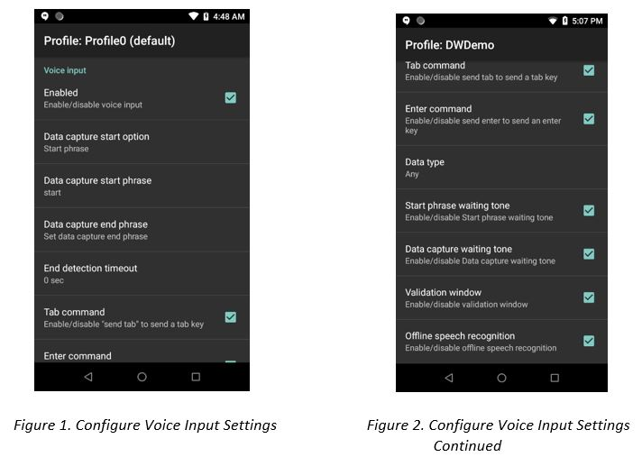
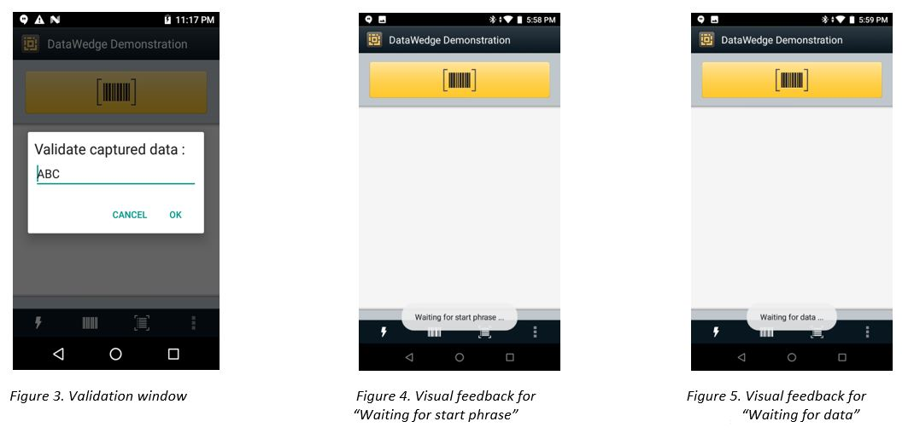

概述
语音输入使 DataWedge 可以将口语输入转换为按键，如同键入或从扫描获取一样。语音输入使用 GMS 设备上包含的 Google 语音识别引擎。当条码受潮、损坏、覆有杂散标记或由于其他原因而无法扫描时，可以使用语音转数据捕获。
语音输入选项：
- 使用定义的开始短语或 PTT 按钮开始语音捕获
- 使用短语或超时值终止语音捕获
- 在说出“发送 Tab”命令时发送 TAB 字符
- 在说出“发送 Enter”命令时发送 ENTER 字符
- 将返回的数据限制为字母或数字字符
- 在等待开始短语或数据捕获时播放音频提示
- 验证说出的数据，根据需要编辑获取的数据
- 脱机工作
此功能仅在 Zebra Android Nougat 和 Oreo GMS 设备上受支持。
观看有关 DataWedge 语音输入的 DevTalk 演示：
版本历史记录
- DataWedge 7.4 - 引入了通过 PTT（通话按键）按钮激活语音捕获的功能，并有用于 DataWedge Intent API 的新开始选项语音输入参数。
工作原理
语音输入依赖于 DataWedge 配置文件进行配置。确保将要接收语音捕获的数据的应用程序与配置文件关联。配置文件中的语音输入部分提供用于控制语音数据捕获的选项。请参阅下面的主要功能部分。
语音数据采集可通过预定义的开始短语或按下 PTT 按钮来激活。运行时，语音输入置于“等待开始短语”状态（请参见图 8）。语音数据捕获在说出预定义的“开始短语”之后开始，然后将状态更改为“等待数据”（请参见图 9）。在说出数据之后，或是在说出可选的“结束短语”（如果已定义）之后，语音捕获会在超时值过后停止。数据源可以标识为语音输入，以便根据任何应用程序要求来处理语音数据。条码扫描和语音输入可以存在于相同的 DataWedge 配置文件中，因此两种数据捕获方法可以交换使用。
观看使用 DWDemo 应用程序的语音输入基本知识的演示：
观看展示用于多个字段条目的发送 Enter 命令的演示：
主要功能
可从 DataWege 配置文件访问语音输入功能。

已启用 - 启用语音输入。
数据采集开始选项 - 选择用于语音捕获的触发器选项。
- 开始短语 - 设置用于触发语音捕获的开始短语。开始短语在选项数据采集开始短语中指定。
- PTT 按钮 - 设置用于触发语音捕获的 PTT 按钮。仅在 EC30、MC93、TC52/TC57、TC72/TC77 和 TC8300 设备上支持。对于其他设备，PTT 按钮可以映射到设备上的可用按钮。
数据采集开始短语 - 如果开始短语已选为数据采集开始选项，则是用于开始数据采集的指定短语。开始短语中不支持数字和特殊字符。默认值是 "start"。
数据捕获结束短语 - 用于结束数据捕获的可选短语。无默认值。
结束检测超时 - 为处于“等待数据”状态期间的数据捕获设置超时值（以秒为单位）。如果该值设置为 "0" 并且定义了结束短语，则会无限期等待数据捕获。而当未定义结束短语时，会立即返回数据。此超时是近似值，因为可能会遇到 1 到 2 秒的延迟。默认值为 "0"。
Tab 命令 - 在说出命令“发送 Tab”时发送 Tab 键。仅当设备处于“等待开始短语”状态时，才支持此命令。
Enter 命令 - 在说出命令“发送 Enter”时发送 Enter 键。仅当设备处于“等待开始短语”状态时，才支持此命令。
数据类型 - 配置要返回的数据类型，其中包括：任意、字母或数字。限制根据首选项捕获的数据需要数据类型。数据类型选择：
- 任意 - 返回所有扫描的数据。例如，如果扫描了条码 ABC123，则返回 ABC123。
- 字母 - 仅返回字母字符。例如，如果扫描了条码 ABC123，则仅返回 ABC。
- 数字 - 仅返回数字。例如，如果扫描了条码 ABC123，则仅返回 123。
开始短语等待提示音 - 控制开始短语等待提示音。它可启用/禁用“等待开始”的音频反馈，以便在错过弹出消息通知以及“等待数据”状态发生更改时，通知设备正在等待启动语音引擎。
数据捕获等待提示音 - 控制数据捕获等待提示音。它可启用/禁用“等待数据”的音频反馈，以便在错过弹出消息通知时，通知设备正在等待捕获数据。
脱机语音识别 - 在无法访问互联网时启用脱机语音识别。这会使用脱机识别语音引擎来检测说出的数据。
验证窗口 - 在说话之后验证结果（显示输出的数据），并且提供在同一屏幕上编辑数据（如果需要）的功能。这可用于脱机模式，因为在此模式下收到的结果可能不准确。

请参阅下面的“限制”。
配置
语音输入参数
DataWedge 语音输入可以通过 DataWedge API 以编程方式进行控制。请参阅 Set Config API 中的“DataWedge 语音输入插件”，以配置以下语音输入参数：
| 参数名称 | 参数值 |
|---|---|
| voice_input_enabled | true，false |
| voice_data_capture_start_phrase | start（默认值） |
| voice_data_capture_end_phrase | [空白]（默认值） |
| voice_end_detection_timeout | 0-30（以秒为单位） |
| voice_tab_command | true，false |
| voice_enter_command | true，false |
| voice_data_type | 0 - 任意，1 - 字母，2 - 数字 |
| voice_start_phrase_waiting_tone | true，false |
| voice_data_capture_waiting_tone | true，false |
| voice_validation_window | true，false |
| voice_data_capture_waiting_tone | true，false |
| voice_offline_speech | true，false |
| voice_data_capture_start_option | START_PHRASE（默认） PTT_BUTTON |
设置语音输入配置示例
请参阅 DataWedge Set Config API。
限制
- 语音输入仅使用英语进行验证。
- 脱机语音识别提供准确性水平较低。
- 在使用应用程序管理器的 DisableGMSApps 操作的 GMS 限制模式下，语音输入无法正常工作，因为它依赖于 Google 语音识别。
- 不要在使用 DataWedge 语音输入时使用 Google Assistant，因为它可能会导致不必要的行为。
- 不支持提供数字和其他特殊字符作为数据捕获开始短语的一部分。
- 如果 Enterprise Home Screen (EHS) 处于限制模式，则不支持语音输入。但是，启用 EHS 中的所有权限设置会恢复 DataWedge 中的语音输入。
- 如果在语音采集过程中释放了 PTT（通话按键）按钮，则由于语音引擎此时仍在继续监听，可能会有 1 到 2 秒的延迟来显示采集的数据。
- 如果 PTT Express 已启用且正在运行，则不应同时使用语音输入，否则会导致意外行为。
相关指南：